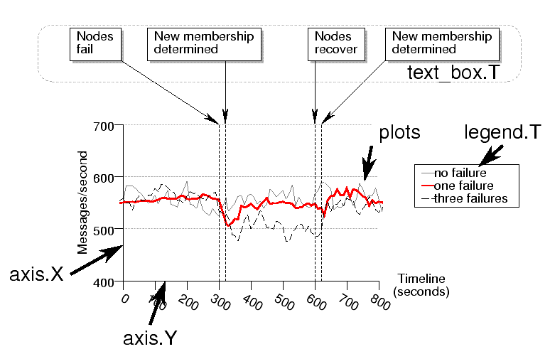

| PyChart |
| PyChart |
A chart comprises a set of components. Each component belongs to a certain class, from which an instance tailored for a particular chart is generated. The below picture shows example of a chart and its components.

The standard set of component classes follow:
area.T:This class defines the size, the location, and the coordinate system (linear, logarithmic, etc) of a chart ( see Section 6). It also contains axes, plots, and legends, as described below. At least one Area must be created in any chart.
axis.X:axis.Y:axis.X and
axis.Y, corresponding to horizontal and vertical axes.
bar_plot.T:line_plot.T:pie_plot.T:range_plot.T:interval_plot.T:rose_plot.T:
legend.T:
text_box.T:
canvas.T:canvas is a "virtual paper" that defines graph-drawing
primitives, such as lines, rectangles, and texts. One canvas corresponds
to one output file. Canvas is used by other components in the graph and
is usually not manipulated by users directly. It's handy, however, if
you want to draw a line/circle/text/etc, directly on the PostScript or
PDF file. See Section 21.
| PyChart |